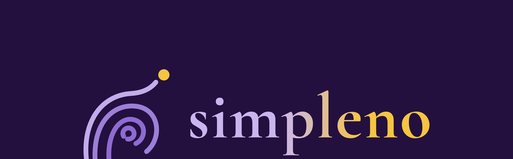
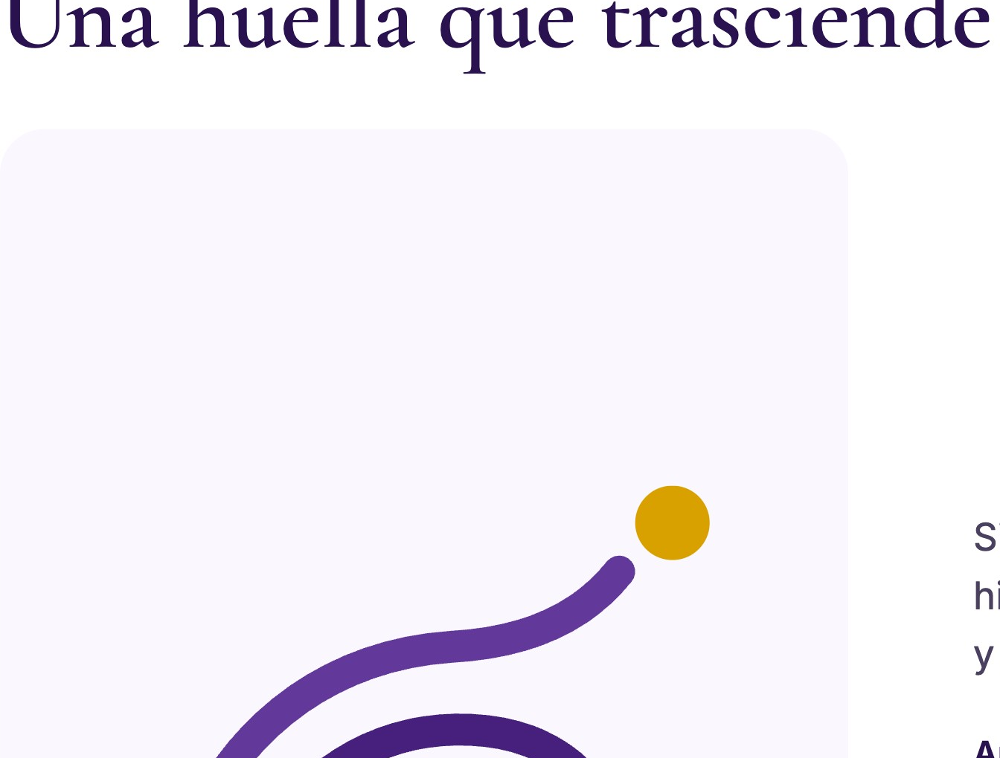
Simpleno es un espacio para compartir vivencias de forma anónima, donde la historia es el centro y no quien la cuenta. Su nombre une dos palabras: simple y pleno.
Una huella dactilar dibujada a mano: única, humana, sin pose. Es propia sin mostrar quién sos.
El núcleo, un pequeño círculo, es la vivencia: el centro desde donde cada historia empieza a contarse.
La línea exterior se suelta y sube hacia un punto de luz: una historia que sale de uno y sostiene a otros.
En el nombre, «ple» es la sílaba que comparten las dos palabras: allí el violeta de lo simple se transforma en el dorado de lo pleno.
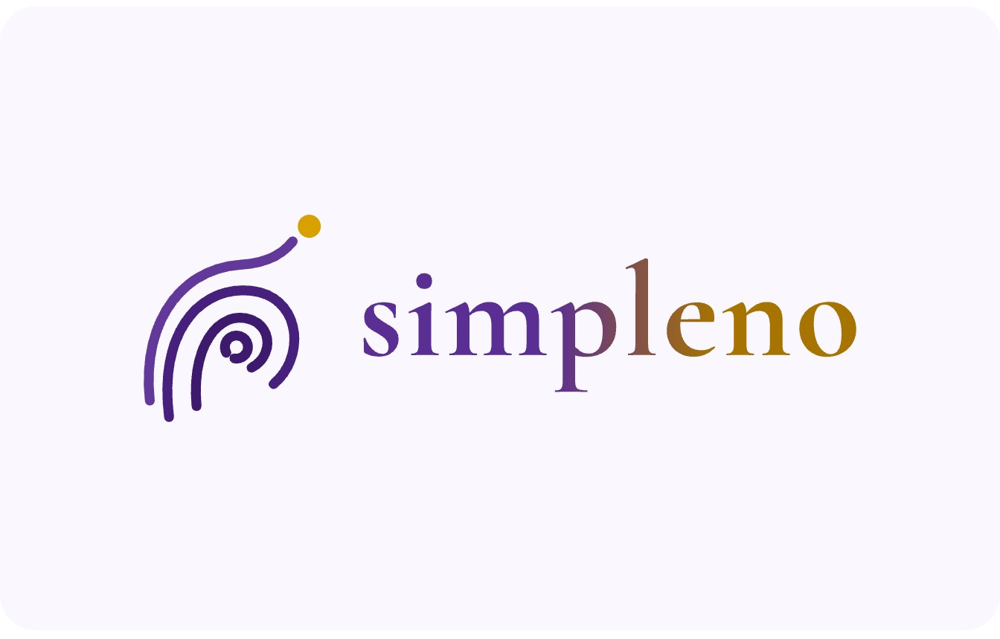
Símbolo más nombre. Es la firma de la marca: usala siempre que haya espacio.
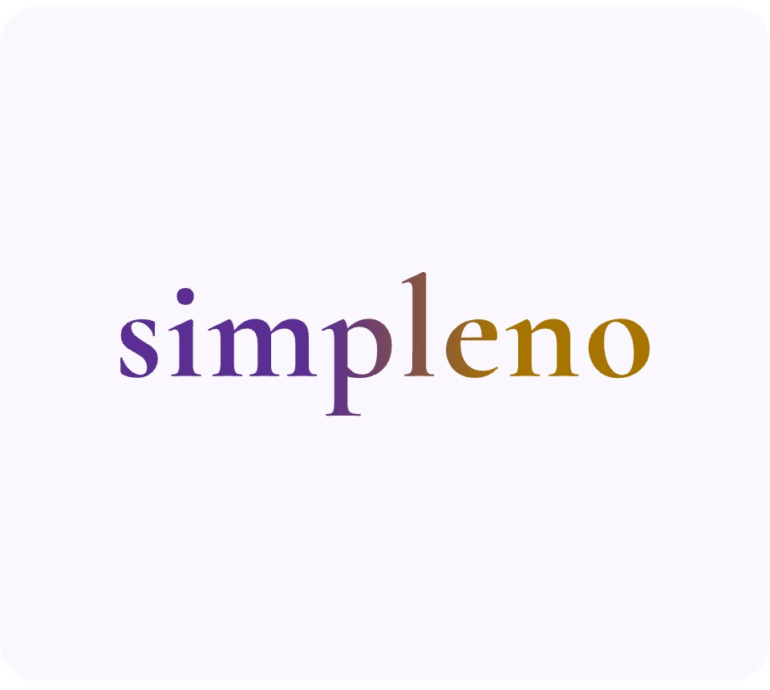
Solo el nombre. Para espacios horizontales angostos o cuando el símbolo ya aparece cerca.
Solo el símbolo. Para perfil de redes, ícono de app, favicon y sellos.
Las tres piezas no se rearman ni se recomponen: usá siempre los archivos originales de la carpeta de marca.
Los violetas llevan la marca; el oro es un acento, nunca protagonista (alrededor del 10 %). Los valores CMYK son aproximados: validalos con una prueba de imprenta.
Aa Bb Cc Ññ 0123456789
Historias que trascienden
Semibold (600) y Bold (700). Clásica y cálida: da el tono reflexivo y humano. Para títulos, frases destacadas y citas.
Aa Bb Cc Ññ 0123456789
¿Qué querés leer o escuchar hoy?
Regular (400), Medium (500) y Semibold (600). Clara y legible en pantalla: para textos, botones e interfaz.
Ambas son de uso libre y se descargan de Google Fonts. El nombre en el logo está convertido a curvas: no se reescribe con la tipografía.
x = la altura de la letra «o» del nombre. Dejá al menos ese espacio libre alrededor de la marca, sin textos, bordes ni imágenes.
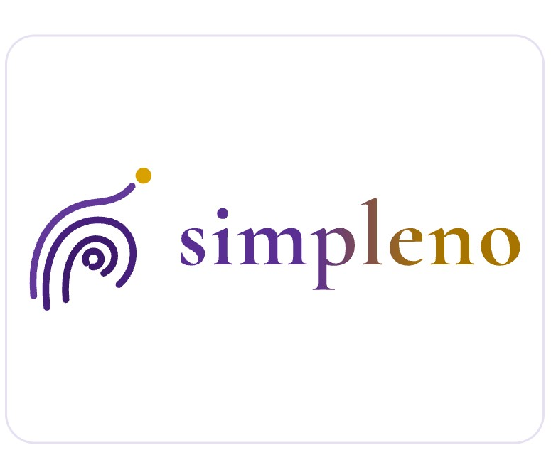
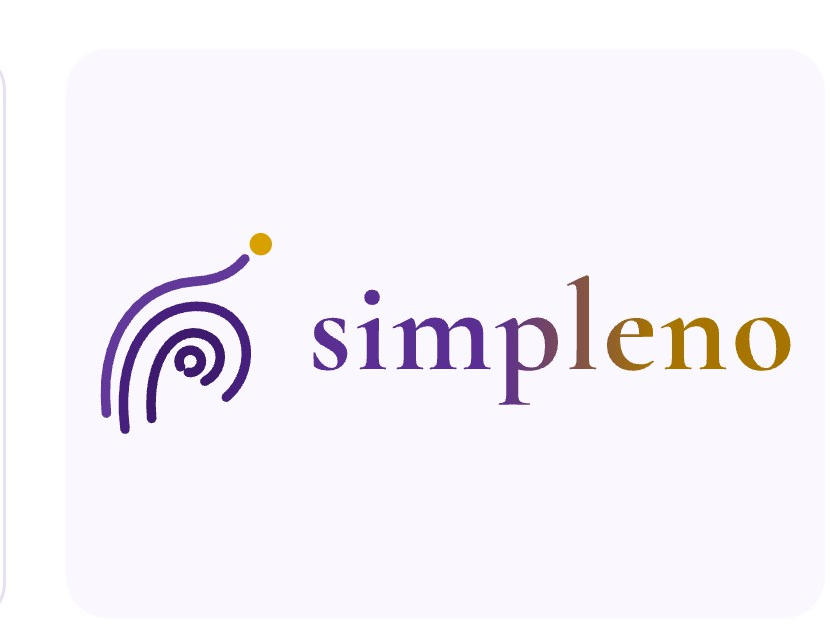
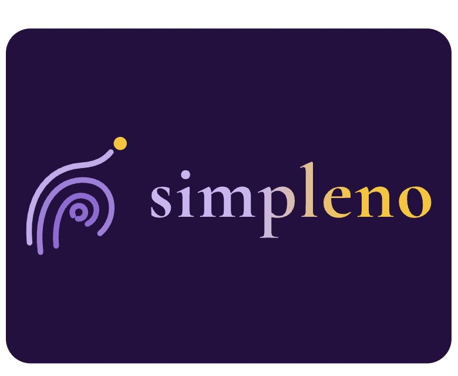
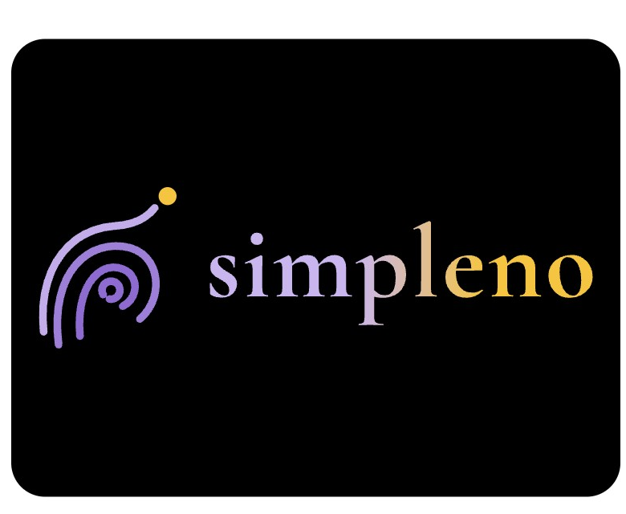
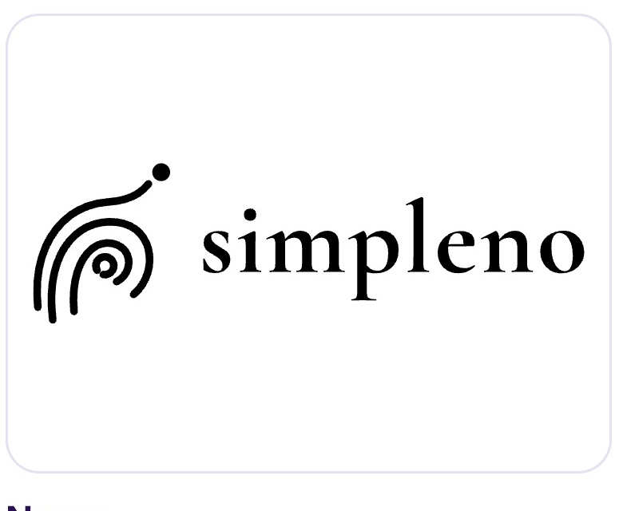
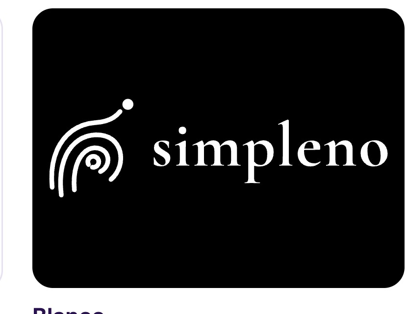
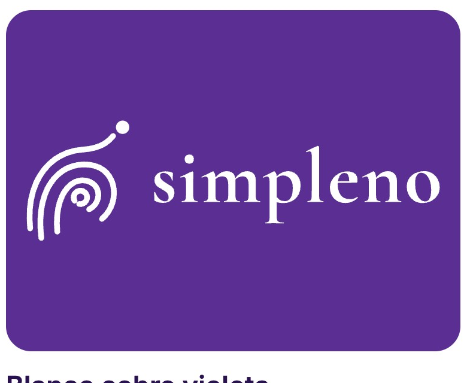
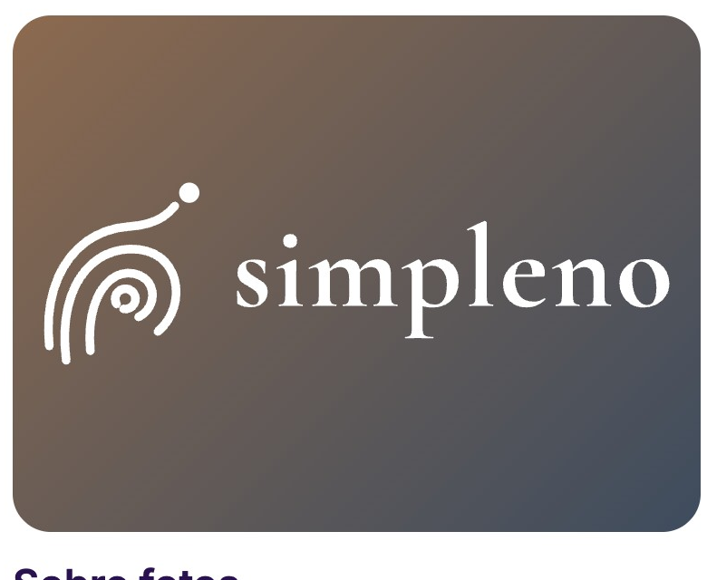